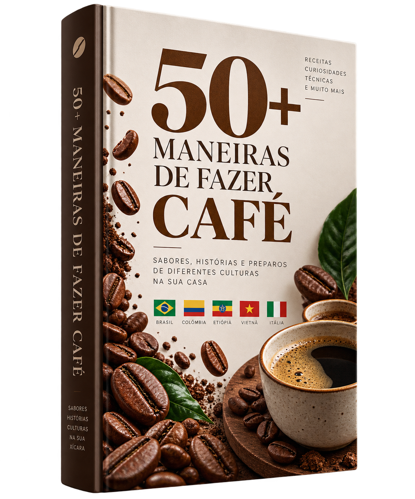
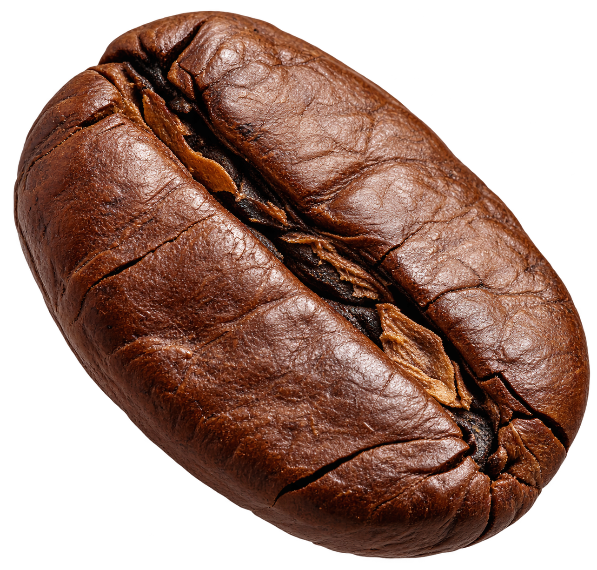

Seu café. Seu repertório.
Mais do que receitas: uma experiência para explorar café todos os dias.
Descubra 78 preparos com contexto, ingredientes, proporções, moagem, temperatura, passo a passo, modo guiado e espaço para registrar o que funcionou melhor para você.
78 receitas & estilosmodo preparofavoritos & notasfunciona offline


0%
Sua jornadaMonte seu próprio repertório de café.Favoritos, receitas experimentadas e anotações ficam salvos neste aparelho.
0experimentados
0favoritos
78para explorar
Escolha pelo momento
Comece pela vontade.
Você não precisa conhecer o nome da bebida. Escolha o tipo de experiência que quer agora.
Quero refrescar
Cold brew, iced latte, espresso tônica e outras bebidas geladas.
Ver gelados →Quero cremosidade
Latte, cappuccino, flat white, cortado e combinações com leite.
Ver cremosos →Quero aprender um método
V60, prensa francesa, Chemex, AeroPress, moka e muito mais.
Ver métodos →Quero viajar na xícara
Explore referências culturais e preparos de diferentes lugares do mundo.
Abrir passaporte →Uma sugestão para hoje
Ver biblioteca completa →Deixe o guia escolher uma direção.
Volte de onde parou
Abrir Meu Café →Explorados recentemente.
Use como app
Seu guia pode morar na tela inicial.
Quando o navegador permitir, adicione o guia ao celular para abrir como uma experiência independente e manter as páginas principais disponíveis mesmo com conexão instável.